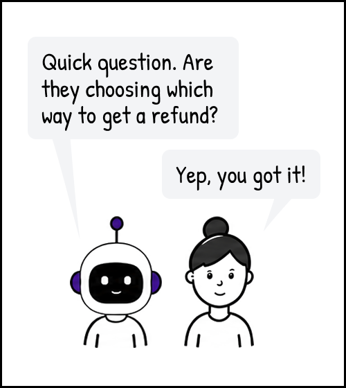
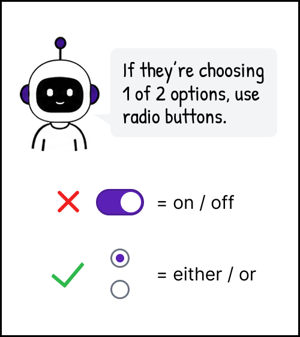
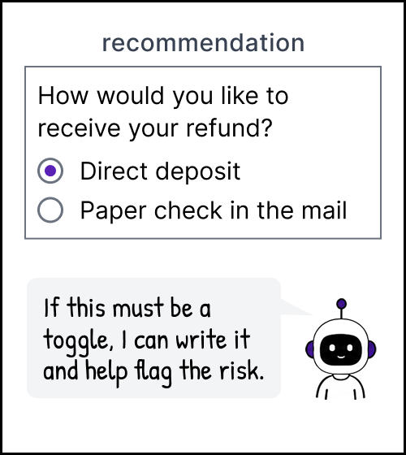

We turned an AI agent into a design coach
Phase 3. Make great work repeatable.
We needed to scale design expertise
The roadmap was expanding while content design headcount was shrinking, just as demand for in-app messaging was growing across UX and the business.
We needed more people to make strong decisions about content, placement, and messaging strategy without relying on a content designer for every project.
Our first AI writing tool fell flat
To help people write UI content, we built an agent in LibreChat. But there was no way to import extensive documentation; the agent had only two short instruction fields. Even our word list was too long. We spent our limited characters on broad guidance: friendly, simple, clear.
The results were "meh." The agent could rewrite copy, but not particularly well. It missed subjective concepts like tone, and sometimes even straightforward criteria like capitalization.
Meanwhile, we turned scattered guidance into a system
In parallel, we were consolidating an enormous array of documentation, to make it more accessible and searchable for others.
This structure gave strategy, standards, and guidance one clear home: our design system.
We added a lot of information to the design system, and made it significantly easier to use.
Here's what we did.
- Gave content guidance a clear home.
- Replaced scattered lists of options with clearer rules.
- Clarified what each component was for and when to use it.
- Added content standards alongside component guidance.
The audience for this work was people, not AI.
We mistook clear rules for an automatable process
Leadership was pushing hard to scale more work through AI. I saw an opportunity: could an agent go beyond advising and actually enforce the decisions we constantly had to coach people through?
We defined a basic content design workflow around common requests, then loaded it into Copilot. I taught the agent to complete a thorough intake assessment, and to challenge questionable communication decisions before giving people the content they asked for. It would only provide content after everything else had been resolved.
View full sizeIt failed immediately in testing
Feedback from inside and outside UX was damning: "It took too long" and "it wouldn't give me what I needed."
Within UX, it was generally too late to send designers back through the full content design process.
Outside UX, partners didn't need a police officer. They needed someone who could help them find a better way to meet their goal. That required judgment, creativity, and negotiation.
We changed the agent from cop to coach
The original agent caught every infraction, and tried to force a fix.
Now, the agent coached users through the challenges they were up against. It gave them the content they came for, surfaced the most relevant risks or standards alongside it, and let them decide what to do next.
UX Designer in Toggle Trouble
UX Designer in Toggle Trouble




Panel 1. A UX designer says, "Help me write this." The request uses an on toggle and says, "Send refund by direct deposit. If not, we'll mail a check."
Panel 2. The Coach asks, "Quick question. Are they choosing which way to get a refund?" The designer replies, "Yep, you got it!"
Panel 3. The Coach says, "If they're choosing 1 of 2 options, use radio buttons." A toggle is labeled "on / off" and marked with a red X. Two stacked radio buttons are labeled "either / or" and marked with a green check.
Panel 4. Recommendation: "How would you like to receive your refund?" "Direct deposit" is selected. "Paper check in the mail" is unselected. The Coach adds, "If this must be a toggle, I can write it and help flag the risk."
Product designers starting a new project could still ask it to walk them through the simplified content design process we had outlined. We kept that original workflow in place, just toned down the pushback.
When users got what they came for, we did, too
The new approach worked. 122 people across UX and partner teams adopted the coach.
Content improved, and requests and design flows became better aligned to strategy. Straightforward standards like word choice, character limits, and date formats were routinely incorporated. The coach also surfaced less familiar guidance, from communication strategy to reading level and contextual placement.
The original workflow had its place, too. A few months later, four designers on my team who were native Spanish speakers agreed that, if they had to choose, they'd take the coach's design guidance over its writing help.